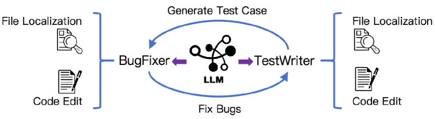
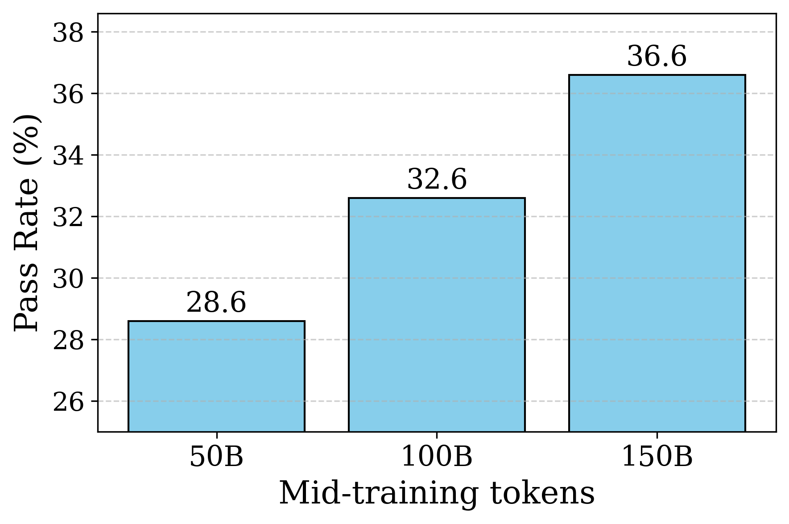
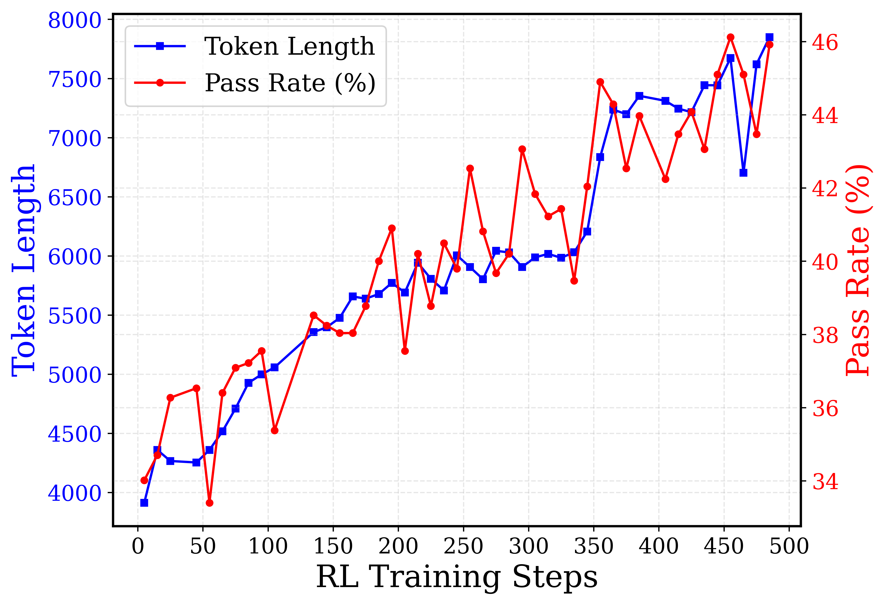
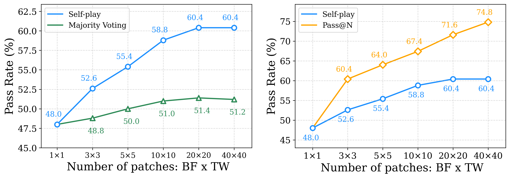
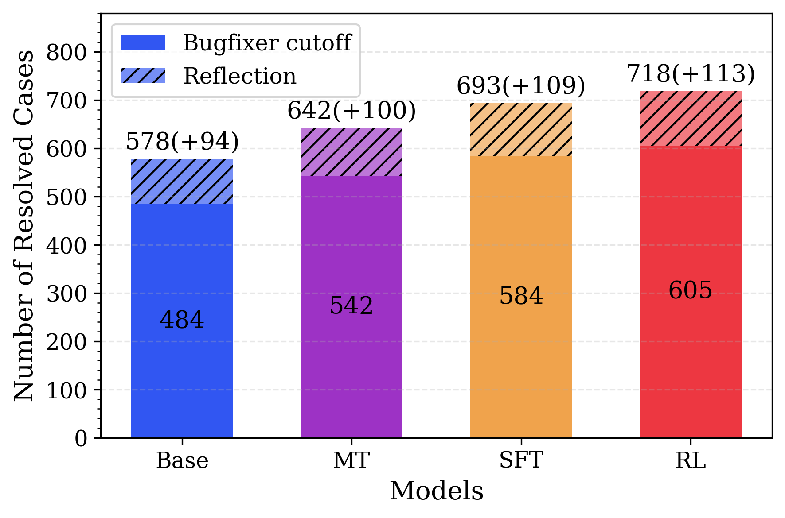
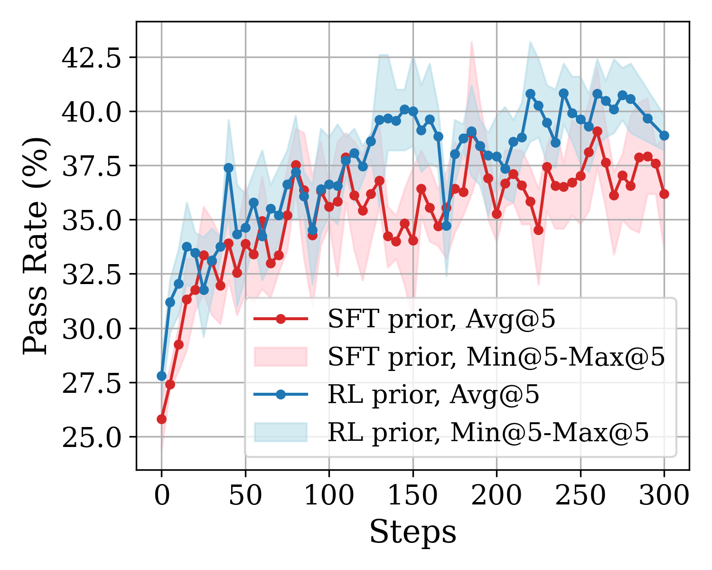

Kimi-Dev：把「Agentless 训练」当作 SWE-Agent 的技能先验
Kimi-Dev: Agentless Training as Skill Prior for SWE-Agents
一句话：解软件工程任务（SWE）有两条公认对立的路线——按固定流水线走的 Agentless（工作流），和多轮自由交互的 SWE-Agent（智能体）。本文主张二者不是非此即彼：用推理密集的 Agentless 训练，能把定位 bug、改代码、自我反思这些原子能力「烤」成模型的技能先验，再用极少的轨迹数据就能高效地把它适配成一个强大的 SWE-Agent。
本页基于 arXiv HTML 原文（v3）正文、表格与 7 张原始图表构建；正文术语首次出现时给出英文原词，便于对照原文。阅读原文 ↗
00 TL;DR · 30 秒抓住核心
- 核心主张：Agentless 训练不该被当成最终产物，而应被看作诱导技能先验（skill prior）的手段——它把 bug 定位、代码编辑、自我反思/验证这些原子能力植入模型，为后续训练更强、更通用的 SWE-Agent 打地基。
- 先做一个最强的 Agentless 模型：以 Qwen2.5-72B-Base 为底座，走「中期训练 → 冷启动 → 强化学习 → 测试时自对弈」四步配方，得到 Kimi-Dev，在 SWE-bench Verified 上拿到 60.4%，是工作流类方法里的开源 SoTA。
- 再证明技能能迁移：仅用 5,016 条公开轨迹做轻量 SFT，就把 Kimi-Dev 适配成 SWE-Agent，拿到 48.6% pass@1，与 Claude 3.5 Sonnet（241022）持平。
- 结论：Agentless 与 agentic 是互补的两个阶段，不是互斥的两条岔路。结构化的技能先验可以「搭脚手架」，让自主智能体的训练更稳、更省、更能泛化。
—— 释义自论文摘要
01 问题：SWE-bench 与「两种范式之争」
SWE-bench 是衡量大模型做软件工程的代表性基准：给一个真实 GitHub 仓库里的 bug issue，模型要产出一个能修复它的补丁（patch），对错由「打上补丁后相应单元测试是否通过」自动判定。它难度高、有可执行的客观奖励、还直接对应真实经济价值，于是成了整个领域的焦点。
围绕 SWE-bench，业界长出两条解法路线，并被长期视为互斥：
- 给任务描述 + 一套工具 + 问题陈述，让 agent 多轮交互：自主规划、动手、反思，自己决定何时停。
- 自由度高 → 潜力与适应性上限更高，像人类开发者那样调试。
- 但端到端难训：轨迹动辄几十上百步，奖励稀疏、长程信用分配难，RL 容易不稳定甚至崩溃。
- 把解题预定义成流水线：定位（localization）→ 修复（repair）→ 写测试（test）。
- 每一步都变成可验证奖励的单轮问题，模块化、稳定，易用 RLVR 训练。
- 但探索空间受限、灵活性差；遇到需要多轮增量修改的场景就难适应，错误模式藏在单轮长推理里、不好监控。
02 本文的反直觉假设：把两条路线接起来
两种范式各有一套「为了 A 牺牲 B」的取舍：Agentless 用灵活性和性能天花板，换来了模块化与稳定；SWE-Agent 反过来。本文从训练配方的视角挑战这个二分法：
换句话说，作者打赌：与其从零训智能体，不如先用 Agentless 训练把原子技能练扎实，再让这些先验去支撑端到端的多轮交互——这样后续的智能体训练会更稳、更省样本、更能泛化。整篇论文就是在验证这个假设的两步：
03 方法总览：BugFixer × TestWriter 的「二人组」
怎么把 GitHub issue 的解决过程拆成可训练的技能？作者把它建模成两个角色的协作：
- BugFixer（修复者）：产出能正确修复 bug 的补丁。成功判据：补丁能通过 issue 配套的单元测试。
- TestWriter（测试编写者）：写出能复现 bug 的单元测试。好测试的判据：在打补丁前会失败、打补丁后会通过。
这两个角色都依赖两项核心技能：文件定位（file localization）——找到与 bug/测试相关的文件；代码编辑（code edit）——做出必要的修改。整套训练就是在强化这两项技能。
分饰两角

- 中央的 LLM：图中间的网状节点代表同一个大模型，它同时扮演两个角色，而不是两个独立模型。
- 左侧 BugFixer：紫色箭头由 LLM 指向 BugFixer，负责「Fix Bugs」（下方弧线）——读懂 issue 后产出修复补丁。
- 右侧 TestWriter：紫色箭头由 LLM 指向 TestWriter，负责「Generate Test Case」（上方弧线）——写出能复现 bug 的单元测试。
- 两侧重复出现的图标：File Localization（放大镜）与 Code Edit（文档+笔）说明两个角色共享同一套底层技能，只是作用对象不同：BugFixer 改的是源码逻辑，TestWriter 改的是测试文件。
- 蓝色环形箭头：表示二者形成一个闭环——测试用来检验补丁、补丁用来验证测试，这正是后面「测试时自对弈」的基础。
一句话总结：所有训练都围绕「定位 + 编辑」这两项原子技能展开，BugFixer 与 TestWriter 只是它们的两种用法。
04 Agentless 训练配方：四步把技能「烤」进模型
Kimi-Dev 的全部能力来自一条四步配方。点「下一步」跟着 checkpoint 一阶段一阶段演化——前两步打地基，第三步用 RL 拔高，第四步在测试时榨出最后的性能：
下面把中期训练与强化学习这两步展开，因为它们直接决定了「技能先验」的强度。测试时自对弈单独放在第 5 节细讲。
中期训练：数据越多，技能越扎实
中期训练给模型灌入关于实际 bug 修复与单测的「领域知识」，是后续阶段更好的起点。作者用 50B / 100B / ~150B token 三档分别训练，再用同一批数据轻量激活，只看 BugFixer 的 pass@1：

- 横轴：中期训练使用的 token 量，三档分别是 50B、100B、约 150B。
- 纵轴：仅 BugFixer 的 pass@1 解决率（%），用同一批 2,000 个 BugFixer 输入输出对做冷启动后评测，便于公平比较。
- 三根柱子：28.6 → 32.6 → 36.6，随 token 量单调上升，没有出现饱和迹象。
- 含义：这一步证明「中期训练」确实有效，且数据规模仍有红利——技能先验越厚，起点越高。
一句话总结：先验不是免费的，得靠大规模真实数据「喂」出来；喂得越多，BugFixer 越强。
强化学习：奖励怎么设计
RL 的训练信号只看执行结果，不掺任何格式或过程奖励——这与很多推理模型不同。两个角色各有一条简单到「不可作弊」的判分规则：
- 生成的补丁通过全部 ground-truth 单测 → 奖励 1
- 否则 → 奖励 0。只认最终执行结果。
- 预测的测试在未打补丁时报错（能复现 bug）
- 且打上 ground-truth 补丁后通过 → 奖励 1
除了纯结果奖励，作者还强调三个让大规模 RL 跑得稳、跑得快的工程要点：
做法：BugFixer 看补丁是否通过全部单测；TestWriter 看测试是否「补丁前失败、补丁后通过」。两者都是可自动执行验证的硬信号。
为什么：避免引入神经奖励模型带来的奖励作弊（reward hacking）与额外训练复杂度，简单且不可钻空子。
做法：把 pass@16 = 0 的题先剔除（它们不贡献 batch loss），得到约 1,200 道有效题、放大有效批量。
课程学习：当前题集成功率超过阈值后，每 100 个 RL 步重新引入 500 道之前被排除（但 RL 后已能做对）的题，逐步把难度抬上去。
做法：训练后期增益趋平时，把最近若干 RL 迭代里的正样本掺进当前批次一起训。
效果：强化模型对成功模式的依赖，加速末期收敛。（消融见原文附录 C.2）
做法：基于 K8s 构建 docker 环境，支持 >10,000 并发实例，保证训练与 rollout 的效率与稳定。
意义：执行式奖励意味着每条样本都要真的跑测试，沙箱并发能力是这套配方能 scale 的隐形前提。
RL 跑起来后，一个和数学/代码推理任务一致的现象出现了：性能和输出长度同步上升——更长的回复里塞满了深入的问题分析与自我反思。

- 横轴：RL 训练步数（0→约 500）。
- 红色曲线（右轴）：BugFixer 的 pass rate，从约 34% 震荡上升到约 46%。
- 蓝色曲线（左轴）：平均输出 token 长度，从约 3,900 增长到约 7,800，几乎翻倍。
- 两条曲线同步：性能与长度一起涨，说明模型学会了「想得更久」——用更长的分析与自我反思换取更高的修复正确率。
- 跨规模成立：作者在 Qwen2.5-14B-Instruct 上也观察到相似的 RL scaling 曲线，证明配方对不同尺寸模型都有效。
一句话总结：RL scaling 在 SWE 任务上同样成立——更长的推理 = 更强的修复能力。TestWriter（原图 3b）的复现率曲线呈现同样趋势。
05 测试时自对弈：让修复者和出题者互相验证
RL 之后，同一个模型同时是合格的 BugFixer 和 TestWriter。测试时，作者让它自己跟自己玩：为每个 issue 生成 40 个候选补丁（第 1 个贪心解码，其余 39 个 temperature=1 保证多样性）和 40 个候选测试，再用真实执行结果给每个补丁打分。
打分逻辑很直观：一个好补丁，应该能让那些原本失败的复现测试转为通过（reproduction），同时不破坏原本就通过的回归测试（regression）。先过滤掉「在原仓库里根本不报错」的无效测试，剩下的测试集 𝒯 与补丁集 ℬ 两两执行，得到每个补丁的得分：
这一步不需要任何额外训练，纯靠测试时多采样 + 执行反馈，就把单次 48.0% 一路推到 60.4%：
自对弈起点
自对弈终点（SoTA）
40 补丁多数投票

- 两张图的横轴：每个实例生成的补丁数 × 测试数（BF × TW），从 1×1 扩到 40×40。
- 左图蓝线（Self-play）：随规模从 48.0% 升到 60.4%；绿线（Majority Voting）只用补丁多数投票，最高约 51%，明显更低。
- 左图关键点：仅 3×3 的自对弈（52.6%）就已经超过 40 个补丁的多数投票——说明测试执行带来的额外信息非常值钱。
- 右图橙线（Pass@N）：把 ground-truth 测试当裁判的理论上界，40×40 时达 74.8%。
- 右图蓝线 vs 橙线的差距：自对弈（60.4%）距离上界（74.8%）还有约 14 个点的空间——瓶颈在 TestWriter 还不够强，复现覆盖不足。这与 Claude 3.5 Sonnet 增设「边界用例检查」相呼应。
一句话总结：让模型自带的「出题能力」去验证「修复能力」，比单纯多采样投票更有效；但出题能力本身就是下一个提升点。
06 核心论证：Agentless 训练 = SWE-Agent 的技能先验
到这里 Kimi-Dev 已经是最强的 Agentless 模型。但本文真正想证明的是 STEP B：这套 Agentless 训练「烤」出来的技能，能迁移到完全不同的多轮智能体框架里。验证方法很干脆——只用 5,016 条公开 SWE-Agent 轨迹（来自 SWE-smith，由 Claude 3.7 Sonnet 在合成环境采集）做一次轻量 SFT。
先验越强，适配越省：四个先验的「赛马」
Agentless 配方有三步（中期训练 MT、冷启动 SFT、强化学习 RL）。作者把四个不同阶段的 checkpoint 当作「先验（prior）」，各自用不同量级的 SWE-Agent 轨迹去做 SFT，看谁适配得更快更好。一个好先验，应该用很少的样本就能快速适配。

- 横轴：SWE-Agent SFT 用的 token 量，从 0（zero-shot）、2²¹（一步梯度下降）一直到 1.5×2²⁸（全部 5,016 条轨迹）。
- 纵轴：适配后在 SWE-bench Verified 上的 pass rate（%）。每个先验有 Pass@1/2/3 三条曲线（●/■/▲）。
- 颜色 = 先验：红=RL、橙=SFT、紫=MT、蓝=Base。颜色越「热」代表 Agentless 训练越充分。
- 核心观察 1：RL 先验（红）几乎全程领先。要达到 Base 先验的最高 pass@1，RL 先验只需 2²³ 个 SFT token，而 Base 先验要 1.5×2²⁸——相差约 48 倍。
- 核心观察 2：MT 先验在极端缺数据时（0、2²¹）落后，但只要有 200 条轨迹（2²⁴）就追平 SFT/RL，说明中期训练后的适配效率已经很高。
- 核心观察 3：SFT 先验大多与 RL 相当，但在 200 条轨迹处出现明显掉点——可能是少量数据塌缩到单一模式、靠记忆过拟合；而 RL 先验嵌入了更可迁移的技能，泛化更稳。
一句话总结：Agentless 训练越充分，作为 SWE-Agent 先验就越省样本、越能泛化——这正是「技能先验」假设的最直接证据。
从长 CoT 到多轮交互：反思技能真的迁移了
作者进一步拆开看：Agentless 训练里练出的自我反思（self-reflection），能不能转化成多轮交互里的「能用更多轮、走更长的路去解题」？两组证据说「能」：
- 适配后，RL 先验在超过 70 轮后仍在持续解出新问题；
- SFT / MT / Base 分别在约 70 / 60 / 50 轮就收益递减。
- 说明长链推理里的反思习惯，迁移成了「长时程交互」的耐力。
- BugFixer 技能：在第 3 阶段刚改完、还没拿到执行反馈的「切点」直接提交的成功数，从 Base 的 484 升到 RL 的 605。
- 反思技能：从切点到轨迹结束的额外成功增量，从 +94 升到 +113。

- 横轴：四个先验适配后的模型 Base / MT / SFT / RL。
- 纵轴：在 SWE-bench Verified 上 3 次运行内解决的案例总数。
- 实心柱（Bugfixer cutoff）：智能体刚完成第 3 阶段「改完代码、还没重跑测试」时若直接提交的成功数——衡量纯 BugFixer 技能：484 → 542 → 584 → 605。
- 斜纹柱（Reflection）：从切点继续跑到轨迹结束，额外多解出的案例数——衡量 反思/重做技能：+94 → +100 → +109 → +113。
- 读图重点：两部分都随 Agentless 训练阶段单调增长，RL 先验在两项技能上都最强（总计 718）。
- 作者诚实备注：反思这部分的度量偏粗——增量里也混入了智能体中途写测试的过程，更细粒度的隔离留作未来工作。
一句话总结：BugFixer 和反思这两类技能，确实是被 Agentless 配方一阶段一阶段「练厚」的，并迁移进了多轮智能体。
▸更进一步：直接做端到端 SWE-Agent RL，RL 先验仍更优点开看图 7 的对照实验
为排除「只是模仿了 Claude 轨迹」的可能，作者在最小冷启动（仅 2²¹ token、一步梯度下降）之上，对 SFT 先验与 RL 先验分别做端到端 SWE-Agent RL。结果：RL 先验在 pass@1/3/5 上都略优于 SFT 先验（与图 5 的 SFT 结果一致）；而仅有中期训练的 MT 先验因可训练问题太少，10 步内 pass@1 就崩到 <2%，反衬出冷启动 + RL 先验的重要性。

07 有意思的点
除了主线，有几处设计取舍与发现值得单独拎出来——它们往往比 benchmark 数字更能帮你判断这套方法适不适合自己的场景。
图 5 里，SFT 先验在 200 条轨迹处明显掉点：少量数据容易塌缩到单一模式，让 SFT 靠记忆过拟合。RL 先验则嵌入了更结构化、可迁移的技能，掉点更小、泛化更稳。
启发：当你希望「学到的能力换个环境还能用」时，RL（探索式）可能比 SFT（模仿式）更划算。
对比 SWE-RL 用的文本相似度奖励，Kimi-Dev 全程采用执行式信号（补丁是否通过单测）。这更贴近「补丁究竟有没有修好 bug」，奖励质量更高。
同理，它的两阶段 TestWriter 比以往只写一个根级测试的做法更好地捕捉仓库上下文，更像真实开发者的工作流。
RL 训练中 TestWriter 偶尔出现假阳性（false positive）：写出的测试看似复现了 bug，实则因覆盖不全而误判。图 4 右也显示自对弈距 pass@N 上界还有约 14 个点的差距，瓶颈正是 TestWriter。
价值：把短板摊开讲，比只报喜更可信，也指明了下一步——增强出题/边界用例能力。
本文最大的观念转变：与其争论「该用工作流还是智能体」，不如把 Agentless 当作诱导技能先验的前置阶段，agentic 当作释放上限的后续阶段。
言下之意：结构化的技能先验可以「搭脚手架」，让自主智能体的训练更稳、更省、更可泛化——这为构建通用编码智能体给出了一条有原则的路径。
论文附录还给了一个很能说明「自我反思技能」的 BugFixer 实例：模型在修 sympy 的 Matrix.col_insert() 时先写错了列偏移，随后自己发现并纠正。这正是被 Agentless 训练「烤」进去、又能迁移到多轮交互的那种反思能力。
▸具体示例：BugFixer 中途自我纠错（附录 E.1，col_insert）点开看模型如何从写错到改对
bug：col_insert 插入若干列后，被插入列之后的原始列发生了错误偏移。模型先给了错误的索引计算，随后在 <think> 里推翻自己、用具体数字验证后改对。
# issue: 把 V 插入 M 的第 3 列后，原来第 3/4/5 列被错误地搬到了开头 # 模型最初写出的（错误）代码： def entry(i, j): if j < pos: # 插入点之前：原样 return self[i, j] elif pos <= j < pos + other.cols: # 插入的新列 return other[i, j - pos] return self[i, j - pos - other.cols] # ← 错：对原始列偏移算错了 <think> ... Wait, let's think again. 原矩阵 6 列，在 pos=3 插入 2 列，新矩阵 8 列。 原来的第 3/4/5 列应落到新位置 5/6/7。但按上式，j=5 时 j-pos-other.cols = 0， 会把原始第 0 列搬到第 5 列 —— 明显错了。 Ah, here's the mistake：被插入的列占了 other.cols 个位置， 所以插入点之后的原始列只应右移 other.cols，正确索引应是 j - other.cols。</think> # 模型自我纠正后的（正确）代码： return self[i, j - other.cols] # ✓ 正确
模型用拟人化的「Wait... Ah, here's the mistake」打断自己、用一个具体例子验证、再回头改对——一个由 Agentless 训练催生、并能迁移到多轮交互的自我反思行为。
08 实验结论：一句话能说清
一句话：Agentless 形态的 Kimi-Dev 在 SWE-bench Verified 上拿到工作流类开源 SoTA（60.4%）；轻量适配后的 SWE-Agent 形态达到 48.6% pass@1，与 Claude 3.5 Sonnet 持平，且只用了 5k 条公开轨迹。最核心的几个数字：
工作流类开源 SoTA
≈ Claude 3.5 Sonnet（49%）
基于 Qwen2.5-72B-Base
公开轨迹条数
Agentless 框架下的横评（原论文 Table 1）
在标准的「40 补丁 + 40 测试」设置下，Kimi-Dev 以 72B 的体量超过了一众更大的模型：
| 模型 | 参数量 | Resolve Rate (%) |
|---|---|---|
| Llama3-SWE-RL | 70B | 41.0 |
| OpenAI-o1 | — | 48.9 |
| DeepSeek-R1-0120 | 671B | 49.2 |
| Claude 3.5 Sonnet (241022) | — | 50.8 |
| MiniMax-M1 | 456B | 56.0 |
| DeepSeek-R1-0528 | 671B | 57.6 |
| SWE-SWISS | 32B | 58.2 |
| Kimi-Dev（本文） | 72B | 60.4 |
SWE-Agent 框架下的横评（原论文 Table 2，<100B 开源段）
适配为智能体后，Kimi-Dev 在同量级开源模型里具竞争力，并追平 Claude 3.5 Sonnet 的 SWE-Agent 成绩：
| 模型 | 框架 | 参数量 | Pass Rate (%) |
|---|---|---|---|
| 参照：闭源 / 大模型 | |||
| Claude 3.5 Sonnet (241022) | SWE-Agent | — | 49.0 |
| Claude 4.0 Sonnet | SWE-Agent | — | 72.7 |
| GPT-5 | Internal | — | 74.9 |
| 开源，<100B | |||
| SWE-agent-LM | SWE-Agent | 32B | 40.2 |
| DeepSWE | OpenHands | 32B | 42.2 |
| Devstral-Small-2507 | OpenHands | 24B | 53.6 |
| Kimi-Dev（SFT 适配） | SWE-Agent | 72B | 48.6 |
注：表 2 还列了更大的闭源/开源模型（如 GPT-5 74.9%、DeepSeek-v3.1 66.0%、Qwen3-Coder 69.6%）。Kimi-Dev 的意义不在刷最高分，而在于用最少的智能体轨迹，就把一个 Agentless 训练出来的模型推到与 Claude 3.5 Sonnet 同档——印证「技能先验可迁移」。
09 局限与结论
作者也坦诚地指出了边界（这些往往比成绩单更能帮你判断它适不适合你的场景）：
- TestWriter 是当前瓶颈：自对弈距「用 ground-truth 测试」的上界（74.8%）还有约 14 个点差距，根因是出题/复现覆盖不足，RL 中还会偶发假阳性。
- 反思技能的度量偏粗：图 6 右的「反思增量」里混入了中途写测试的过程，未能干净地隔离 TestWriter 先验，更细粒度的评估留作未来工作。
- 智能体训练仍是初步：第 4 节主要靠轻量 SFT（+ 小规模端到端 RL 验证），更先进的 agentic RL 技术留待后续。
- 依赖可执行验证：整套方法建立在「补丁/测试能自动跑、对错可判」之上，天然适配代码任务；迁到无法自动验证的领域并不直接成立。